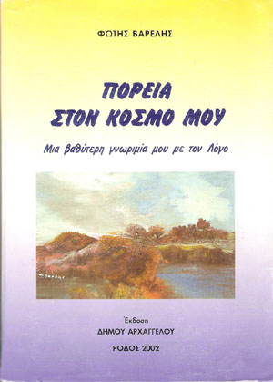

Κι όπως άν λείπαν οι αισθήσεις, θάμενε άγνωστος ο εξωτερικός κόσμος, έτσι άν έλειπε ο λόγος θάμενε και χωρίς έκφραση. Άν έλειπαν οι βαθύτερες ρίζες της πορείας του λόγου θάμεναν έξω τα ξεχωριστά συναισθήματα του ανθρώπου. Και οι Μούσες θάμεναν βουβές.
Δεν υπάρχει τίποτα που να μήν έχει εισχωρήσει ή να μήν προσπαθεί να εισχωρήσει ο λόγος.
Λόγος είναι το κάθε δημιούργημα του ανθρώπου, η κάθε πράξη που γεννιέται σαν έμπνευση τρέφεται και γίνεται όργανο του Νου διά του λόγου.
Με το λόγο μέσα στα κάστρα, ένας κήπος φαίνεται παράδεισος και μέσα στο δάσος μια πηγή γίνεται ψυχή και Νύμφη.
Ο λόγος είναι δύναμη του ανθρώπου, η δόξα του, αλλά και ο έλεγχος της ζωής του. Το κρίμα του, ο τύραννός του, το μεγαλείο του και η κατάντια του.